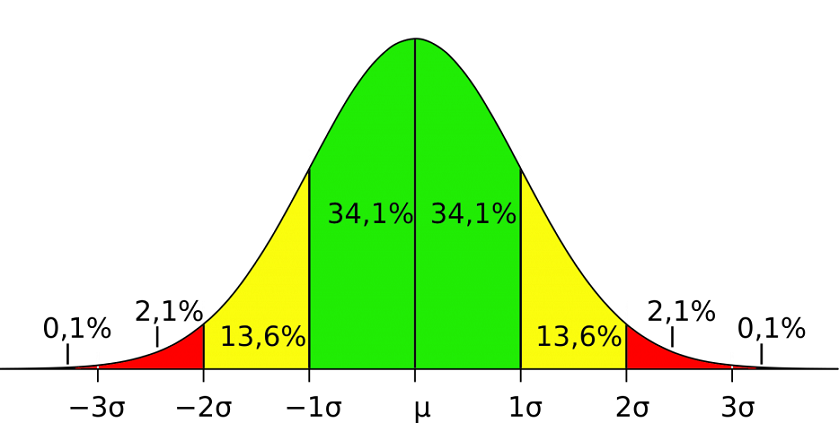

Aportes al Proyecto Integrado de Saberes
En este área se presentara los aportes de cada materia en el proyecto integrado.
Diseño de Circuitos
En el área de Diseño de Circuitos se presentan los aportes de:
- Diseño e implementacion de circuitos combinacionales en protoboard.
- Descripción de decodificadores.
- Manejo de display de 7 segmentos.
- Se hara la elaboración de un cronómetro para ir verificando el tiempo de juego.
Emprendimiento e Innovacion Tecnologica
En el área de Emprendimiento e Innovacion Tecnologica se presentan los aportes de:
- Ideas innovadoras - Proyecto de Integración de saberes.
Análisis Matemático
En el área de Análisis Matemático se presentan los aportes de:
- Caracterización de problemas aplicados como base para ciencias de la computación.
- Proyecto multidiscisciplinario: Aplicacion informatica para gestión de torneos.
- Aporte de la asignatura en la parte de análisis predictivo con el método probabilistico de Monte Carlo.
Teoria de la Distribución y Probabilidad

En el área de Teoria de la Distribucion y Probabilidad se presentan los aportes de:
- Realizar estimaciones sobre los posibles resultados en un Sitema de Gestión de Torneos con panel de resultados predictivos.
Progamación Orientada a Objetos
En el área de Programación Orientada a Objetos se presentan los aportes de:
- El aporte principal de esta unidad es brindar una compensión clara de los conceptos fundamentales de la programación orientada
a objetos, que son la base para la implementacion de software.Los estudiantes aprenderan a definir las clases, objetos, atributos,
metodos, y a entender como se relacionan estos conceptos entre si.
- En el proyecto integrador, este conocimiento es fundamental para la creación de una estructura clara y coherente en la aplicación.
El uso de clases y objetos permite una organización y reutilización del código, facilitando el mantenimiento y la escalabilidad de la
aplicación.Además, el conocimiento adquirido sobre la programación orientada a objetos permitira la implementación de modelos de datos
complejos para el análisis estadistico de competencias deportivas.